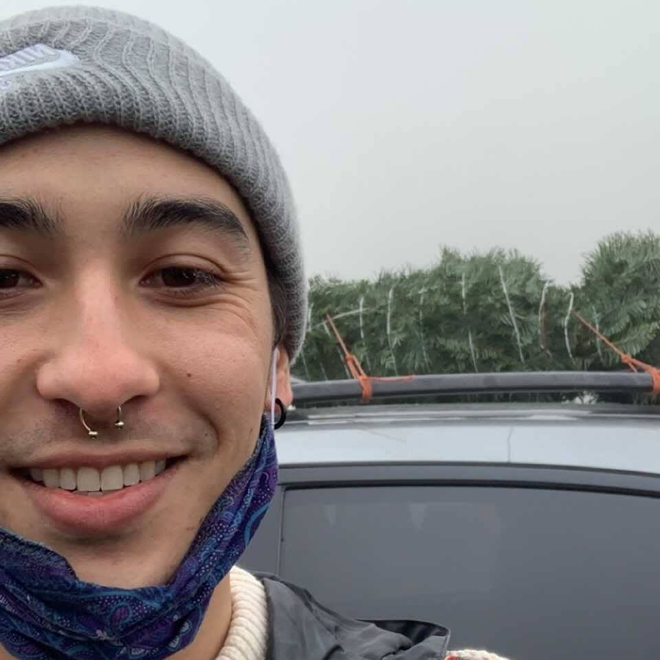

Taylor
Taylor is from Portland Oregon and has always had an interest in mysticism and magic. An accomplished software engineer, he really enjoyed working on this project. A message he has for user's of this app, "Let the cards guide you to a prosperous future"
Christiane

Christiane is originally from Philadelphia and currently lives in Portland. She started coding with R in grad school and enjoys working with data. Her current favorite deck is the Barbara Walker Tarot, and also any deck with cats.
Zach
Zach was born and raised in Los Angeles and now lives in Portland, Oregon. For fun, he likes to play sports, game with his friends, or study the teachings of his favorite philosopher, Alan Watts. He also likes to collect crystals and read books on the magical arts. As his journey continues he is inspired to produce many more projects with exciting and creative concepts.
Austi
Growing up, Austin always had a natural affinity for the arts. Whether it was expressed through writing, painting, cooking, photography, or constant evolving styles and looks. You can find him at his favorite restaurant, Fogo De Chao in Portland, OR. A food connoisseur who loves social events moscow mules, he believes in the power of relationships and community.